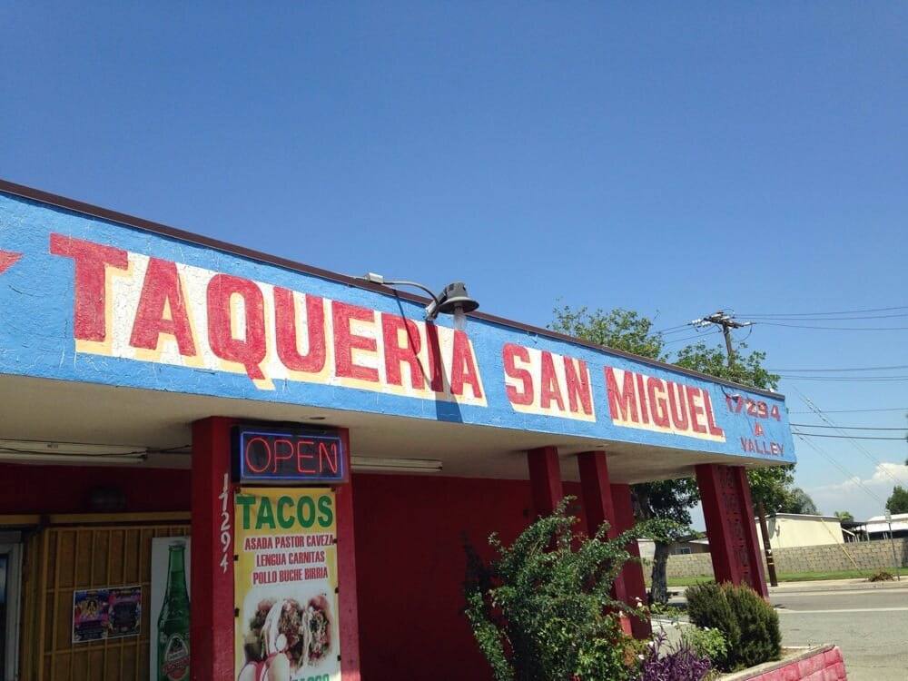
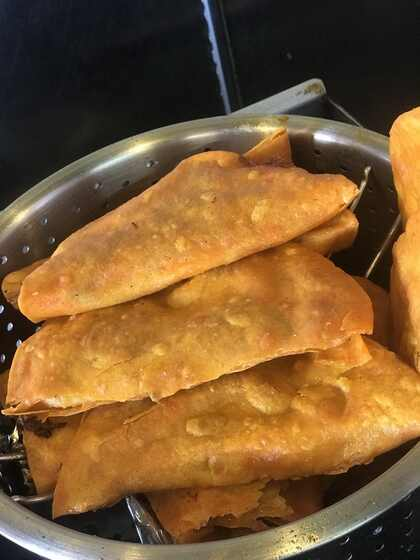

From the kitchen
Taquería
Tacos · Birria · Menudo
Call to confirm today’s menu and availability.
Call restaurant ↗17294 VALLEY BLVD, STE A · FONTANA, CA · OPEN DAILY 8—8
Tacos · Birria · Menudo
Call to confirm today’s menu and availability.
Call restaurant ↗
Today’s counter selection
Call or stop in to ask what’s available today.
Call restaurant ↗See recent feedback, customer photos and updates before you visit.
A look at the Valley Blvd location, the kitchen and the carnicería.


Dine-in · Takeout